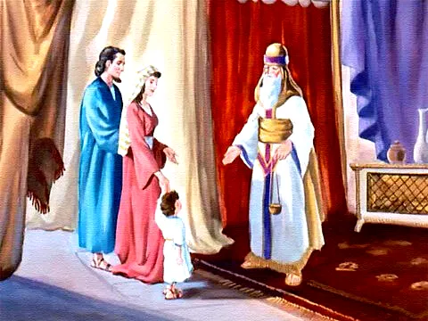

O Nascimento de Samuel
Referência Bíblica: 1 Samuel 1:18-27
Depois daquela grande oração e clamor, Ana foi embora, comeu e já não parecia triste. No outro dia, bem cedo, levantaram-se e foram adorar ao Senhor mais uma vez, antes de seguirem viagem de volta para sua terra, em Ramá. Elcana teve relações com a sua mulher Ana e o Senhor ouviu a sua oração. Passado algum tempo Ana ficou grávida e deu à luz um filho, quem pôs o nome de Samuel, "porque foi ao Senhor que o pedi", dizia ela.

Então chegou o tempo de Elcana ir novamente ao Templo com toda a família para cumprir o sacrifício anual e adorar ao Senhor. Mas Ana não foi com ele. Ela explicou a razão ao marido: " — quando o menino for desmamado, eu o levarei e o apresentarei ao Senhor no templo, e ali ele ficará por toda sua vida." Elcana lhe disse: — Está bem. Faz como melhor lhe parecer.
Ana orou novamente agradecendo a Deus por tão grande benção. A chegada daquele menino mudou pra sempre aquela família. Samuel desde pequenino ouvia a mãe dizer como Deus era bom. Certamente, as orações de sua mãe o abençoaram por toda a vida. Você, criança que ouve essa história, também é muito especial para Deus e para sua família. Lembre-se sempre, Deus te formou, te ama muito e tem um lindo propósito para sua vida!
Moral da História
Deus surpreende-nos! O Senhor atendeu a ora√ß√£o sincera üôè de Ana e lhe deu o filho que ela tanto sonhava. Ana estava grata ao Senhor, realizada e muito feliz por ter o seu filhinho nos bra√ßos. Mas isso n√£o a impediu de obedecer ao Senhor. Muitos se esquecem de Deus quando recebem o que desejavam. Quando chegou a hora, Ana cumpriu o que prometeu. Cumpra seus prop√≥sitos com Deus. Seja obediente e fiel, quer nos tempos ruins e quer nos tempos felizes.